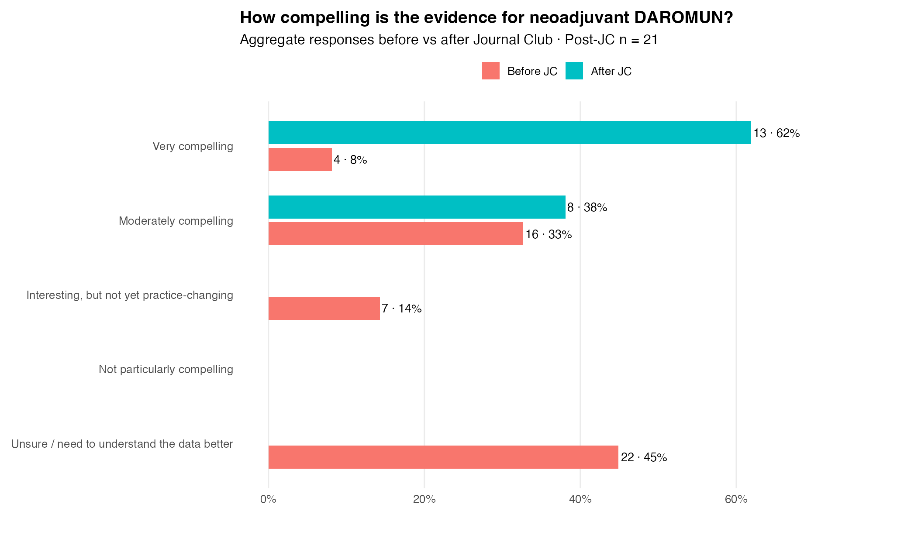
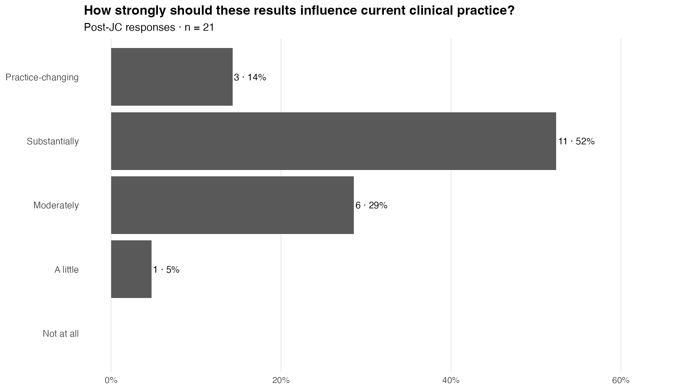

DAROMUN / PIVOTAL
2026-09-25
SoCO Journal Club · September 25, 2026
DAROMUN / PIVOTAL
The randomized efficacy signal was compelling. The harder question was where a locally delivered neoadjuvant therapy belongs in a melanoma treatment landscape that changed while PIVOTAL was being conducted.
Meeting pulse
A large group stayed for a long discussion
People who joined
41
Unique people linked to SOCO-E0009 in the persistent registry
Median time together
84 min
Half the group stayed at least this long
Stayed at least an hour
76%
Joined for at least 60 minutes
The paper we discussed
PIVOTAL — the longer follow-up
Phase III update · Journal of Clinical Oncology · 2026
Neoadjuvant intralesional L19IL2/L19TNF (DAROMUN) in resectable locally advanced melanoma
Hauschild A, et al. J Clin Oncol. 2026.
doi: 10.1200/JCO-26-00852
The question beneath the paper: PIVOTAL showed a durable randomized recurrence benefit. But how should that result be interpreted — and used — in a contemporary neoadjuvant era?
The 2026 update extended median follow-up to 36.8 months and reported updated relapse-free survival (RFS), distant metastasis-free survival (DMFS), safety, and post hoc event-free survival (EFS) analyses. The intention-to-treat population included 256 patients, of whom 222 had recurrent disease.
The updated RFS analysis remained strongly separated: HR 0.55, with median RFS of 23.8 months with DAROMUN followed by surgery versus 6.5 months with surgery alone.
The interpretive challenge: this was a randomized trial, but not a head-to-head comparison with contemporary neoadjuvant checkpoint strategies. Its population was predominantly recurrent and often previously treated, making direct cross-trial placement difficult.
Starting position
The pre-meeting survey captured more than confidence
The pre-Journal Club pulse captured where the room was starting: how compelling the PIVOTAL evidence seemed, what clinicians would do with a recurrent, injectable melanoma after prior anti–PD-1, whether the efficacy result felt clinically meaningful, and which uncertainty most needed discussion.
45% Needed more context
Before the session, this was the largest single response to the evidence question; only 8% called the evidence very compelling.
8% Would choose DAROMUN → surgery
In the recurrent, injectable post–anti–PD-1 scenario, relatively few respondents entered the meeting already choosing DAROMUN followed by surgery.
43% Wanted the modern comparator question
The most important agenda item was how DAROMUN should be interpreted alongside contemporary neoadjuvant systemic therapy.
▤ Explore the full pre-meeting survey Open the complete closed-question results: audience, starting familiarity, evidence, clinical choice, regulatory-style vote, and discussion priorities.
These are the archived pre-discussion responses from September 25, preserving the room’s starting point across the closed survey questions.
Who answered?
A multidisciplinary respondent group
Starting familiarity
How familiar was the room with DAROMUN / PIVOTAL?
Starting position
How compelling was the evidence before discussion?
A regulatory-style threshold
Are the PIVOTAL efficacy results evaluable and clinically meaningful?
Yes47%23 respondents
No0%0 respondents
Unsure53%26 respondents
A patient in front of you
What would respondents recommend before the discussion?
Clinical scenario: Resectable, injectable locoregional recurrence after prior surgery and adjuvant anti–PD-1. No distant disease. Assume DAROMUN is available.
Set the agenda
What most needed discussion?
The survey is a descriptive snapshot of SoCO respondents, not a representative estimate of melanoma practice nationally or internationally. Percentages use the non-missing denominator for each question.
Before → after
The community’s view changed sharply after the discussion
Before Journal Club, only 8% of 49 respondents rated the evidence very compelling, while 45% said they needed to understand the data better. After the discussion, 62% of 21 post-JC respondents selected very compelling and the remainder selected moderately compelling.
Important: the pre- and post-meeting surveys represent aggregate respondent groups rather than paired individual responses. The shift should therefore be interpreted as a change in the distribution of responses, not as documented person-level conversion.
Practice signal
Compelling did not automatically mean practice-changing
The post-JC question deliberately separated belief in the evidence from its immediate influence on care. 67% of post-JC respondents said the results should influence current clinical practice substantially or be practice-changing — a strong signal, but not the same as universal adoption.

Discussion highlights
What the room wrestled with
1 · The efficacy signal survived scrutiny
Beth Buchbinder walked the group through the RFS curves and their early separation. Michael Wong went further, arguing that the DMFS signal was especially important because it suggested a systemic effect from a locally delivered therapy.
2 · The neoadjuvant window has to count
A preoperative strategy cannot be judged only among patients who ultimately reach surgery. Michael Wong emphasized that RFS and EFS start different clocks, while Alfredo Covelli provided study-team context on why EFS has become more prominent in current neoadjuvant development.
3 · PIVOTAL studied a different population
Isaac Brownell challenged whether the population was comparable with modern neoadjuvant trials at all. Nikhil Khushalani sharpened the question: what would this same recurrent, often previously treated population have looked like with contemporary systemic neoadjuvant therapy?
4 · Safety may be an important differentiator
Sunandana Chandra focused on the severe and sometimes life-altering immune toxicities seen with systemic neoadjuvant therapy. Isaac Brownell and Michael Wong framed the potential advantage as a different benefit–risk tradeoff rather than proof of comparative superiority.
5 · Patient selection is now the harder question
Vishal Patel pushed on practical injection-site toxicity and whether inflammatory breakdown should be interpreted differently when the injected lesion is headed to surgery. He also surfaced questions from Aubri McEvoy about molecular selection and what to do after an inadequate pathologic response.
Where the discussion landed
The question changed from “does it work?” to “where do I use it?”
The meeting ended in a more interesting place than it began. The group largely moved beyond whether PIVOTAL demonstrated a meaningful randomized treatment effect. The unresolved questions were comparative and practical: where DAROMUN fits alongside contemporary neoadjuvant immunotherapy, which patients are best suited for a locally delivered strategy, how toxicity should enter that choice, and which endpoint best captures the full preoperative treatment experience.
Where this recap intentionally stops: the purpose here is to preserve the community’s encounter with the evidence — the starting uncertainty, the discussion, the change in aggregate opinion, and the questions that remained. A separate JoCO Perspective on the Science can take the next step: external synthesis, comparative positioning, methodological critique, and a durable thesis about where this strategy belongs.
Our community
Who joined us?
👋 First SoCO Meeting
| Name | Professional role | Institution |
|---|---|---|
| Lexi Rutt | Regulatory Coordinator – Melanoma | Mass General Brigham |
| Patrick Kurpaska | Medical Oncologist | Mass General Brigham |
| Shannon Saed | Medical Student / Research Fellow | CUNY School of Medicine |
| Sara Behbahani | Mohs Fellow | Mass General Brigham |
| Annekathryn Goodman | Gynecologic Oncologist | Mass General Brigham |
A special welcome to colleagues joining SoCO for the first time.
💬 Voices that shaped the discussion
Beth Buchbinder, Michael Wong, Isaac Brownell, Nikhil Khushalani, Sunandana Chandra, and Vishal Patel repeatedly sharpened the discussion across efficacy, trial interpretation, safety, and patient selection.
Beth Buchbinder Michael Wong Isaac Brownell Nikhil Khushalani Sunandana Chandra Vishal Patel
Alfredo Covelli added study-team context throughout the discussion, and Aubri McEvoy’s questions helped push the conversation toward molecular selection and management after an inadequate pathologic response.
41 people representedView attendance and affiliations
| Name | Affiliation |
|---|---|
| Adewole S. Adamson | The University of Texas at Austin |
| Aleigha R. Lawless | Mass General Brigham |
| Alexis Rutt | Mass General Brigham |
| Alfredo Covelli | Philogen |
| Annekathryn Goodman | Mass General Brigham |
| Anupama Jacob | Sun Pharma |
| Aubriana McEvoy | Washington University in St. Louis |
| Claire Verschraegen | The Ohio State University |
| Claudia Comacchio | Philogen |
| Danielle Brazel | Mass General Brigham |
| David J Savage | University of New Mexico Comprehensive Cancer Center |
| David M. Miller | Mass General Brigham |
| Donato Michele Cosi | Philogen |
| Elizabeth I. Buchbinder | Mass General Brigham |
| Frances Collichio | University of North Carolina |
| Isaac Brownell | National Institutes of Health |
| Jessica L. Fewkes | Mass Eye and Ear |
| Juliane Andrade Czapla | Mass General Brigham |
| Justine V. Cohen | Dana-Farber Cancer Institute |
| Karam Khaddour | Dana-Farber Cancer Institute |
| Kathryn Bollin | Scripps Health |
| Kenneth Y Tsai | Moffitt Cancer Center |
| Krista Lachance | University of Washington |
| Krista M. Rubin | Mass General Brigham |
| Lisa Zaba | Stanford University |
| Mehran Behruj Yusuf | University of Alabama at Birmingham |
| Michael K. K. Wong | Roswell Park Comprehensive Cancer Center |
| Mina Bakhtiar | Mass General Brigham |
| Molly Yancovitz | Beth Israel Deaconess Medical Center |
| Nikhil Khushalani | Moffitt Cancer Center |
| Patrick Kurpaska | Mass General Brigham |
| Paul Nghiem | University of Washington |
| Rima Kulikauskas | University of Washington |
| Ross D. Merkin | Mass General Brigham |
| Sara Behbahani | Mass General Brigham |
| Shannon Saed | CUNY School of Medicine |
| Sheila Dakhel | Philogen |
| Sunandana Chandra | Northwestern University |
| Suzanne Topalian | Johns Hopkins Medicine |
| Tatyana Sharova | Mass General Brigham |
| Vishal Patel | George Washington University |